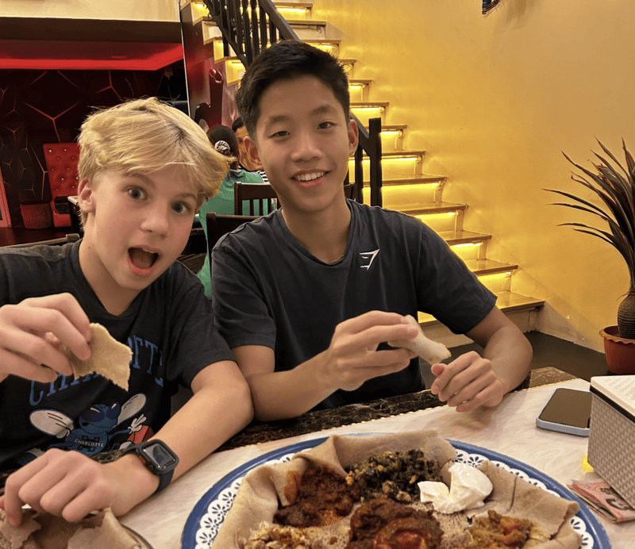

I am the oldest sibling of 6 Kids. I was born in Dallas, Texas thus resulting in my middle name being Dallas. I love playing basketball, soccer, and vollyball. I love building computers, playing video games, and editing. My favorate food is sushi, and my favorate drink is Thai tea or Dr. Pepper. This website was made for a Applied Tech project. Also if you have read this far please contact me with the message "I EAT POTATOS" for a fun surprise. PS. I am the one with the blond hair in the photo below. I also attend the International School of Bangkok (ICS) .
